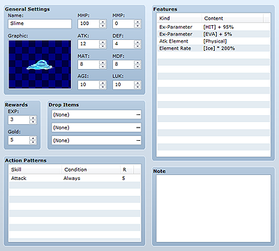
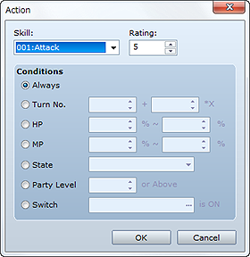

This data represents the enemies that that player will battle. In addition to parameters like those you set for actors, you also set action patterns for the enemies you define.

The name of the enemy you are creating. If the name you enter is too long, the entire string may not fit onscreen.
The image of the enemy to display in battle. Double-clicking it displays the Battle Graphic dialog box where you can specify an image file. When specifying a file, you can use the Hue slider to adjust the graphic's hue. Set None if you do not want to display a graphic.
Set the enemy's parameters at the start of battle. Max HP can be specified between 1 and 999999, Max MP between 0 and 9999, and the rest between 1 and 999.
The EXP (1 to 9999999) and Gold (0 to 9999999) the party earns for winning a battle against the enemy.
Items (including weapons and armor) earned by the party by winning a battle against the enemy. Double-click the field and in the dialog box that appears, specify the target item(s) and the Probability (between 1/1 and 1/1000) that they will be spawned.

Set how the enemy will act in battle. The enemy's normal attack is automatically set by default. In the Action Patterns dialog box that appears when you double-click, specify the action type in Skill, the action's priority of use in Rating, and the condition for using the action in Conditions. Battle actions are defined based on Rules for Using Action Patterns described later on.
Set the number of turns elapsed as a condition. Define it using the formula A + B × X, where A is the number of turns since the start of battle and B is the number of turn cycles. When "2" is specified for A and "3" for B, the condition is fulfilled each time three turns elapse after the second turn (in other words, the action occurs on the fifth turn, eighth turn and so on).
Set the enemy's HP value as a condition. Specify a percentage range (0 to 100%) of the enemy's max HP. The condition is fulfilled when HP enters the specified range.
Set the enemy's MP value as a condition. Specify a percentage range (0 to 100%) of the enemy's max MP. The condition is fulfilled when MP enters the specified range.
Set the application of the specified state(s) to the enemy as a condition.
Set the level of the party members as a condition. The condition is fulfilled when the highest level among party members is at or above the specified value.
Set the specified switch as a condition. The condition is fulfilled when the switch is on.
The features of the enemy you are creating. Define them in the window that appears when you double-click each line in the Features box. See Setting Features for more information.
The rules below determine which one of the action patterns set in the Action Patterns dialog box the enemy will adopt in combat.
(1) Action patterns that fulfill the conditions that were set are collected. No action is triggered if there are no action patterns that fulfill the set conditions.
(2) Out of the action patterns that fulfill the conditions, those that are within two rating points of the highest priority rating will be candidates for use.
(3) Actions 1 rating point away from the highest priority rating will be used 2/3 of the time and those 2 rating points away will be used 1/3 of the time. If there are actions with the same ratings, their probability of use will be the same.
Each has a 50% chance of being used.
The action with a "6" rating has a 50% chance of being used, a "5" rating a 33.3% chance (2/3 of 50%), and a "4" rating a 16.6% chance (1/3 of 50%). The action with a "3" rating is not considered a candidate.
The action with a "5" rating has a 60% chance of being used and the two actions with a "3" rating each have a 20% chance (1/3 of 60%).
(4) Once the candidate actions are selected and the probabilities assigned, one is selected using a random number.